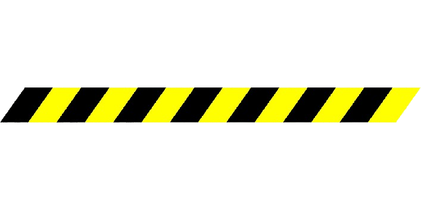

Portal de Kuar-Tor
Recursos para a campanha "A Última Expedição"
O Mundo de Kuar-Tor
Descubra a história, regras do sistema +2d6, e os segredos da ilha amaldiçoada. Essencial para todos os jogadores.
Explorar a CampanhaGerador de Fichas
Forje seu personagem para a expedição. Salve, importe e gerencie suas fichas de forma prática e rápida.
Criar PersonagemTomo das Estatísticas
Utilize este grimório para rolar dados, adicionar valores personalizados e consultar as estatísticas arcanas de seus lançamentos.
Rolar os DadosManutenção
Acesse ferramentas e recursos de manutenção para a campanha, incluindo mapas, cofres e arquivos de inteligência.
Acessar Manutenção 